| 1 | BLK-AY-TORIKESHI-REGISTER | goto start screen | goto | | http://127.0.0.1:10097/ANB00/ANA01.html | 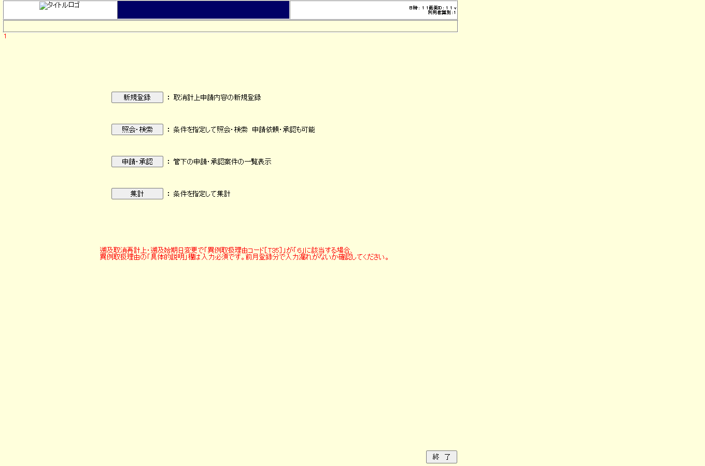 |
| 2 | BLK-AY-TORIKESHI-REGISTER | click 新規登録 | click | #route2 | http://127.0.0.1:10097/ANB00/ANA02.html |  |
| 3 | BLK-AY-TORIKESHI-REGISTER | ast transition 取消計上申請登録画面 | assert | #regist | http://127.0.0.1:10097/ANB00/ANA02.html | |
| 4 | BLK-AY-TORIKESHI-REGISTER | fill 課支社CD | fill | #section_code | http://127.0.0.1:10097/ANB00/ANA02.html | |
| 5 | BLK-AY-TORIKESHI-REGISTER | fill 代理店CD | fill | #agent_code | http://127.0.0.1:10097/ANB00/ANA02.html | 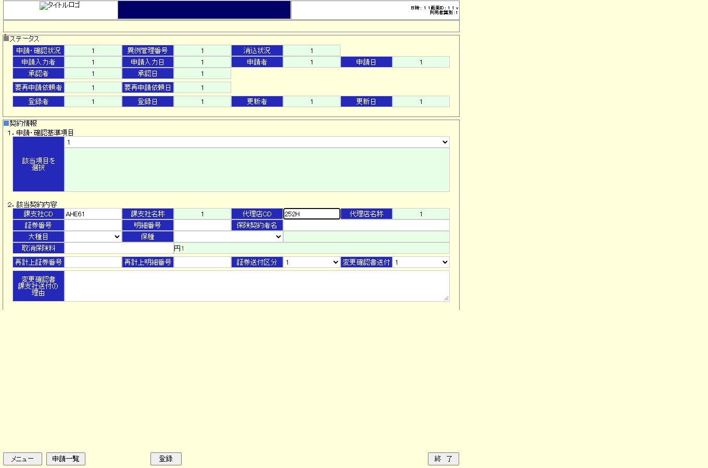 |
| 6 | BLK-AY-TORIKESHI-REGISTER | fill 証券番号 | fill | #policy_number | http://127.0.0.1:10097/ANB00/ANA02.html | |
| 7 | BLK-AY-TORIKESHI-REGISTER | fill 保険契約者名 | fill | #insurant_name | http://127.0.0.1:10097/ANB00/ANA02.html | 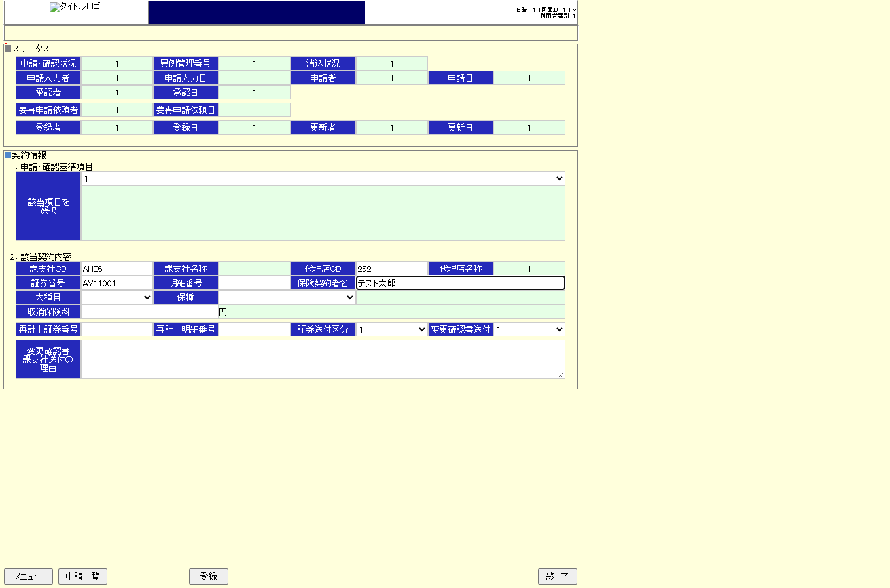 |
| 8 | BLK-AY-TORIKESHI-REGISTER | select 大種目 自賠責 | fill | select[name='large_item_list.selected'] | http://127.0.0.1:10097/ANB00/ANA02.html | |
| 9 | BLK-AY-TORIKESHI-REGISTER | fill 申込日 | fill | #cancel_application_date | http://127.0.0.1:10097/ANB00/ANA02.html | 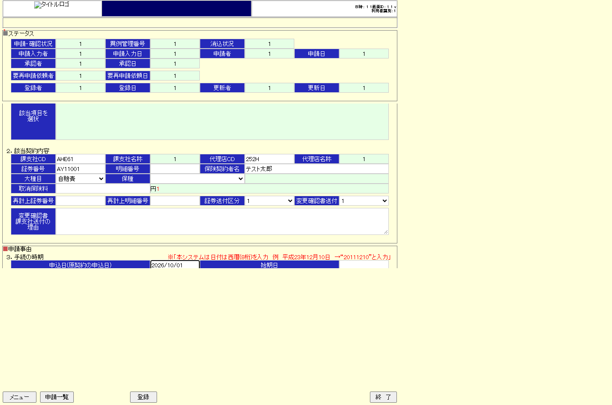 |
| 10 | BLK-AY-TORIKESHI-REGISTER | fill 始期日 | fill | #start_date | http://127.0.0.1:10097/ANB00/ANA02.html | 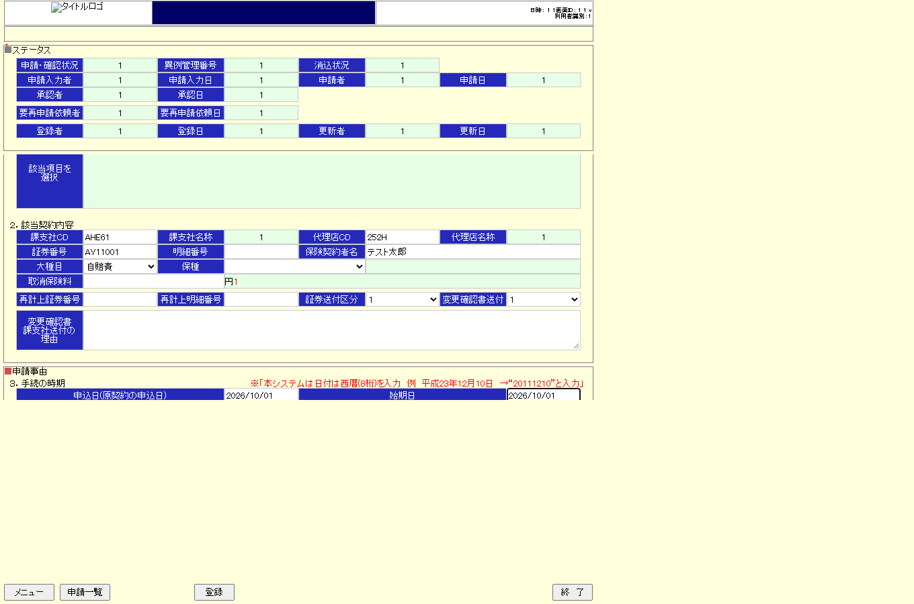 |
| 11 | BLK-AY-TORIKESHI-REGISTER | fill 届出日 | fill | #notification_date | http://127.0.0.1:10097/ANB00/ANA02.html | 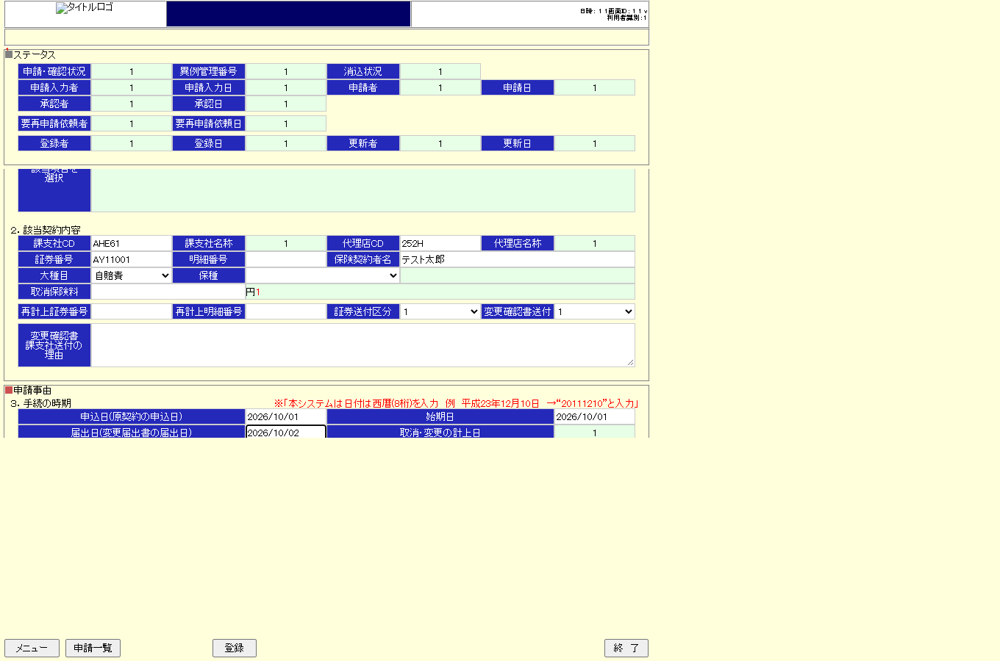 |
| 12 | BLK-AY-TORIKESHI-REGISTER | click 登録 | click | #regist | http://127.0.0.1:10097/ANB00/ANA03.html |  |
| 13 | BLK-AY-TORIKESHI-REGISTER | ast transition 申請・確認更新画面 | assert | #div_gyoumu_area_03 | http://127.0.0.1:10097/ANB00/ANA03.html |  |
| 14 | BLK-AUTO-CE34C5B8 | goto start screen | goto | | http://127.0.0.1:10097/ANB00/ANA03.html |  |
| 15 | BLK-AUTO-CE34C5B8 | input 各項目(契約者名) | fill | #insurant_name | http://127.0.0.1:10097/ANB00/ANA03.html | |
| 16 | BLK-AUTO-CE34C5B8 | click 申請依頼先選択 | click | input[name='selectReqApplicantUser'] | http://127.0.0.1:10097/ANB00/ANA03.html |  |
| 17 | BLK-AUTO-CE34C5B8 | ast 遷移 担当者検索画面 | popup | | http://127.0.0.1:10097/ANB00/ANA03.html | |
| 18 | BLK-AUTO-2B9786A5 | ast 担当者検索 popup表示 | popup | | http://127.0.0.1:10097/ANB00/ANA03.html |  |
| 19 | BLK-AUTO-2B9786A5 | input 氏名 | fill | #user_name_key | http://127.0.0.1:10097/ANB00/ANA10.html?1=3028004586&1=ABM62&1=1&1=req_applicant&gamid=ANA10&gamcd=ANA00&hubsessid=1 | 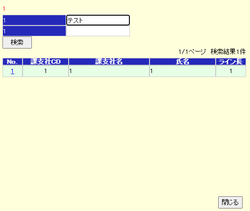 |
| 20 | BLK-AUTO-2B9786A5 | input 課支社CD | fill | #section_code_key | http://127.0.0.1:10097/ANB00/ANA10.html?1=3028004586&1=ABM62&1=1&1=req_applicant&gamid=ANA10&gamcd=ANA00&hubsessid=1 | 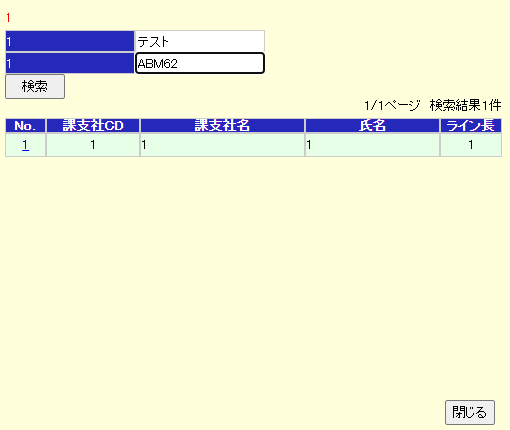 |
| 21 | BLK-AUTO-2B9786A5 | click 検索 | click | #search | http://127.0.0.1:10097/ANB00/ANA10.html | |
| 22 | BLK-AUTO-2B9786A5 | ast 検索結果表示 | assert | #gyoumu_list tr | http://127.0.0.1:10097/ANB00/ANA10.html |  |
| 23 | BLK-AUTO-2B9786A5 | click No(選択) | click | #gyoumu_list a | http://127.0.0.1:10097/ANB00/ANA10.html | — |
| 24 | BLK-AUTO-2B9786A5 | ast 遷移 申請・確認更新画面 | assert | #act101to001 | http://127.0.0.1:10097/ANB00/ANA03.html | 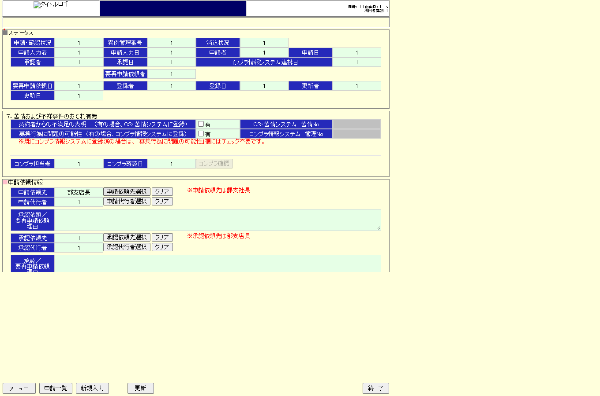 |
| 25 | BLK-AUTO-D2C3A480 | goto start screen | goto | | http://127.0.0.1:10097/ANB00/ANA03.html |  |
| 26 | BLK-AUTO-D2C3A480 | click 更新 | click | #update | http://127.0.0.1:10097/ANB00/ANA03.html | 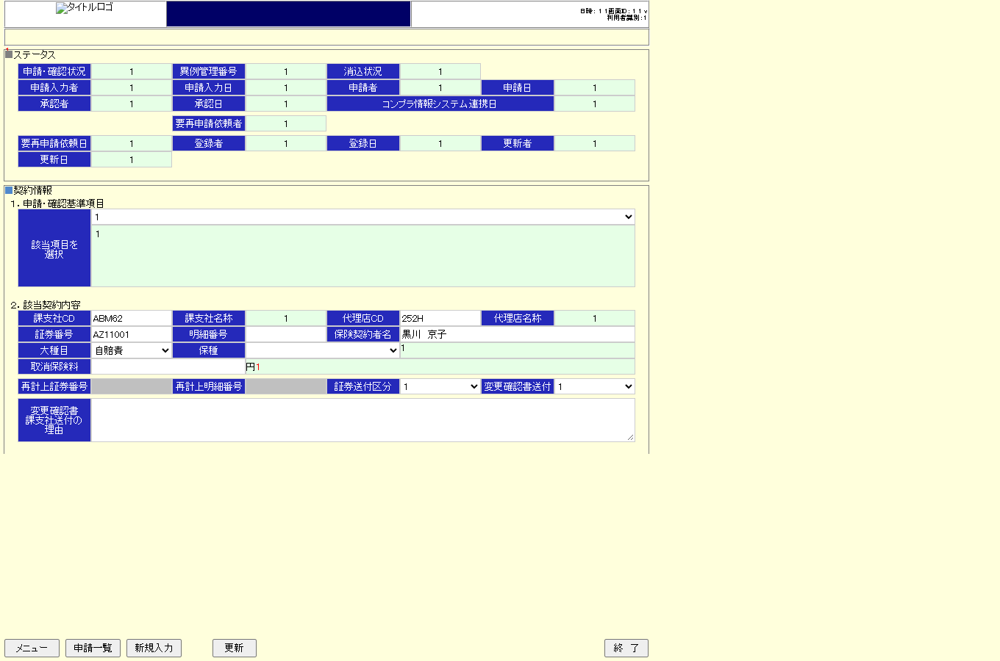 |
| 27 | BLK-AUTO-D2C3A480 | ast 表示 申請・確認更新画面 | assert | #act101to001 | http://127.0.0.1:10097/ANB00/ANA03.html |  |
| 28 | BLK-AUTO-D2C3A480 | click 申請依頼 | click | #requestApplicationButton | http://127.0.0.1:10097/ANB00/ANA03.html |  |
| 29 | BLK-AUTO-D2C3A480 | ast 遷移 送信先(写)選択画面 | popup | | http://127.0.0.1:10097/ANB00/ANA03.html | 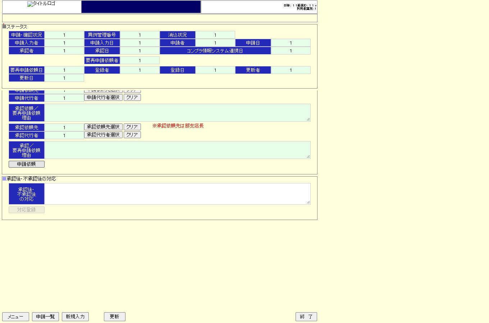 |
| 30 | BLK-AUTO-DF07A781 | ast 送信先(写)選択 popup表示 | popup | | http://127.0.0.1:10097/ANB00/ANA03.html | 選択_popup表示.png) |
| 31 | BLK-AUTO-DF07A781 | input 氏名 | fill | #user_name_key | http://127.0.0.1:10097/ANB00/ANA11.html?1=MAYG901I001&1=requestApplication&gamid=ANA11&gamcd=ANA00&hubsessid=1 | 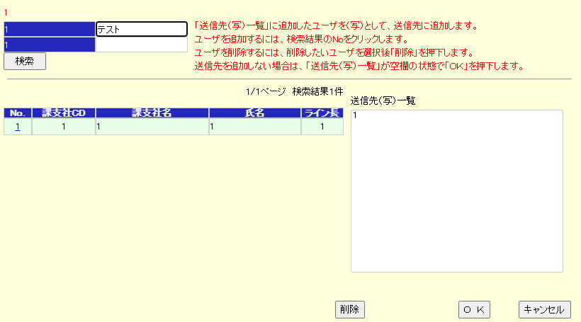 |
| 32 | BLK-AUTO-DF07A781 | input 課支社CD | fill | #section_code_key | http://127.0.0.1:10097/ANB00/ANA11.html?1=MAYG901I001&1=requestApplication&gamid=ANA11&gamcd=ANA00&hubsessid=1 | 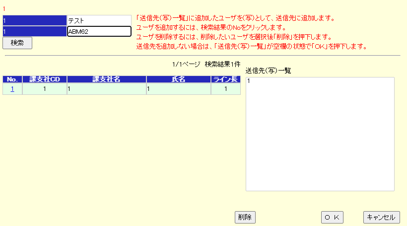 |
| 33 | BLK-AUTO-DF07A781 | click 検索 | click | #search | http://127.0.0.1:10097/ANB00/ANA11.html |  |
| 34 | BLK-AUTO-DF07A781 | ast 検索結果表示 | assert | #gyoumu_list tr | http://127.0.0.1:10097/ANB00/ANA11.html | 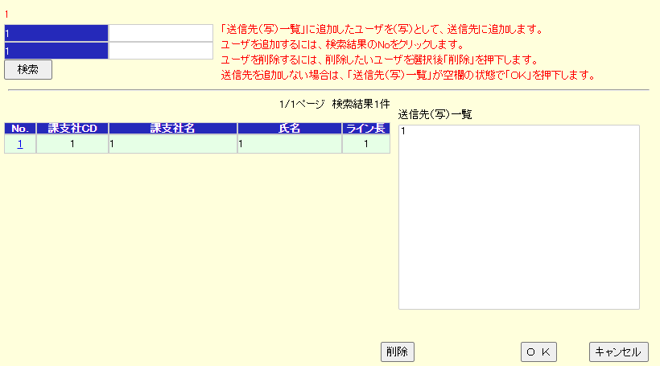 |
| 35 | BLK-AUTO-DF07A781 | click No(送信先一覧へ追加) | click | #gyoumu_list a | http://127.0.0.1:10097/ANB00/ANA11.html | 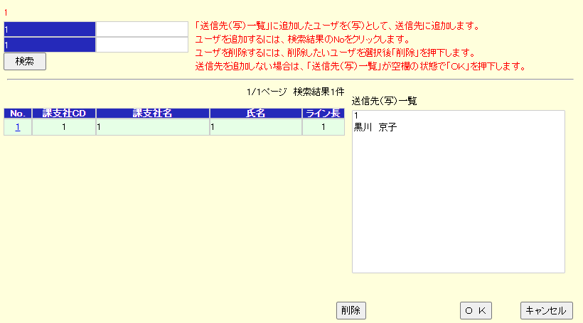 |
| 36 | BLK-AUTO-DF07A781 | click OK | click | input[name='ok'] | http://127.0.0.1:10097/ANB00/ANA11.html | 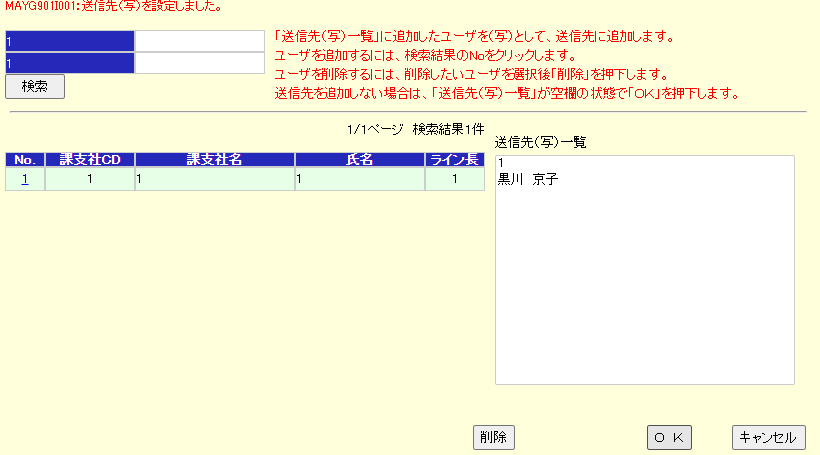 |
| 37 | BLK-AUTO-DF07A781 | ast メッセージ(MAYG901I00x) | assert | #popup_message_area | http://127.0.0.1:10097/ANB00/ANA11.html | .png) |
| 38 | BLK-AUTO-DF07A781 | click OK(確認Msg) | click | input[name='ok'] | http://127.0.0.1:10097/ANB00/ANA11.html | — |
| 39 | BLK-AUTO-DF07A781 | ast 遷移 申請・確認更新画面 | assert | #act101to001 | http://127.0.0.1:10097/ANB00/ANA03.html |  |


.png){kind=link}


選択画面.png){kind=link}


.png){kind=link}